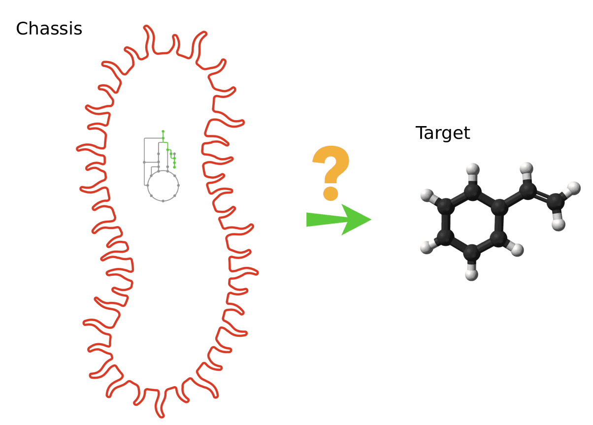
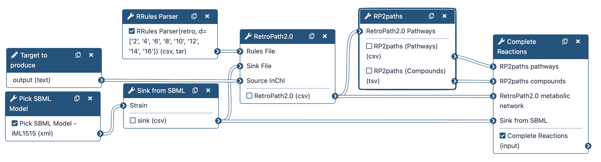

Tutorial — Retro-Biosynthesis¶
Galaxy-SynBioCAD portal is the first toolshed for synthetic biology, metabolic engineering, and industrial biotechnology1. It provides tools aimed at finding pathways to synthesize heterologous compounds in chassis organisms (RetroRules2, RetroPath2.03, RP2Paths, rpCompletion).
Retrosynthesis is a concept originally proposed for synthetic chemistry where chemists have to work backwards, starting from a target product to reach precursors that are endogenous to the chassis (host organism).
Typically, the target compound, also named “source compound” is the compound of interest one wishes to produce, while the precursors are usually compounds that are natively present in a chassis strain.

Figure 1 — How target compound could be produced from chassis.
In this tutorial, we want to obtain the reactions producing the lycopene (source) into the iML1515 Escherichia Coli strain (chassis).
To do that, we will use the following RetroSynthetis Workflow composed of 3 key steps.
First, we aggregate the metabolites present in the chassis and download reaction rules.
Then, RetroPath2.0 generates feasible metabolic routes between a collection of chemical species contained within a GEM SBML (Systems Biology Markup Language) file of the selected organism, a target molecule that the user wishes to produce, and reaction rules extracted from RetroRules.
Lastly, the metabolic network is then deconstructed into individual pathways using RP2paths and rpCompletion takes those individual metabolic pathways to filter them (duplicated pathways are removed), splits them into sub-pathways by adding the appropriate cofactors, and finally converted them to SBML files.
Lastly, the metabolic network is then deconstructed into individual pathways using RP2paths and rpCompletion takes those individual metabolic pathways to filter them (duplicated pathways are removed), splits them into sub-pathways by adding the appropriate cofactors, and finally converted them to SBML files.

Figure 2 — The Retrosynthesis Workflow.
Note that we will run the steps of this workflow individually so as not to neglect the understanding of the intermediate steps as well. Then, we will run the workflow automatically so that it itself retrieves the outputs from the previous step and gives them as input to the next tool.
Navigation
Use the right sidebar to navigate through the tutorial.
Data Preparation¶
RetroSynthesis workflow will be run with the following inputs:
- Chemical structure of the compound to produce, given by its InChI,
- Chemical structure of metabolites available in the chosen chassis (E. coli),
- Reaction rules modeling possible metabolic transformations.
Targeted compound and chassis
In the course of this tutorial, we'll focus on the production of xylitol in an Escherichia Coli strain. To model the metabolism of this strain, we will use the E. coli core model available in the BiGG database ({% cite King2016 %}).
The data used are pretty straight forward to obtain. Firstly, we download an SBML model, then we select all sinks to use into the RetroPath2.0 software from this model. Lastly, we request from RetroRules all possible reactions to find a chemical reaction cascade that produces the target.
Metabolic model¶
Hands-on: Select a model
Run Pick SBML Model (Galaxy Version 0.0.3) with the following parameter:
- Strain: Escherichia coli str. K-12 substr. MG1655 (iML1515)
Q1: What does this tool do? Where the models come from?
The selected SBML model is downloaded from the BiGG database and stored in your history.
Q2: What is the file format of the model?
The model is in SBML format, which is based on XML.
Sink compounds¶
Hands-on: Create a sink file
Run Sink from SBML (Galaxy Version 5.12.1) with the following parameters:
- Strain: sbml_model (output of Pick SBML Model)
- SBML compartment ID: c
Note: Compartment ID
The compartment ID must correspond to the one used in the SBML model. Here, c is the BiGG code for the cytoplasm. Other common compartment IDs are e for extracellular and p for periplasm. If you are unsure, you can open the SBML file with a text editor and search for compartment id=.
If one wishes to use an SBML model from another source, then this value must be changed accordingly.
Q1: What does this tool do?
This tool extracts all metabolites present in the SBML model and creates a sink file (CSV format) that can be used as input for RetroPath2.0.
Q2: How many columns are in the file?
Click on the eye icon, you should see 2 columns: "Name" and "InChi".
Q3: How many compounds are listed in the file?
Reaction rules¶
Hands-on: Download reaction rules
Run RRules Parser (Galaxy Version 2.6.0+galaxy0) with the following parameters:
- Rule Type: retro
- Select the diameters of the reactions rules: 8, 12
- Compress output: no
Q1: What is a reaction rule?
A reaction rule is a generalized representation of a chemical reaction that can be applied to different substrates. It describes the transformation of a specific functional group or substructure within a molecule, allowing for the prediction of possible reactions that can occur with similar compounds.
Q2: What is a diameter in this context?
The diameter of a reaction rule defines the size of the molecular environment around the reaction center that is considered when applying the rule. It determines how specific or general the rule is, with larger diameters capturing more of the surrounding structure and thus being more specific.
Q3: Does a low diameter select specific rules?
No, a low diameter selects more generic rules.
Q4: How many rows are in the file?
More than 200 thousands!
Retrosynthesis¶
Run the Retrosynthesis algorithm using RetroPath2.0¶
RetroPath2.0 is an open-source tool for building retrosynthesis networks by combining reaction rules and a retrosynthesis-based algorithm to link the desired target compound to a set of available precursors. RetroPath2.0 core code is available at myExperiment.
The retrosynthesis network is outputted as a CSV file listing predicted reactions and chemicals (provided as SMILES and InChI) along with other information like a penality score for each reaction.
Hands-on: Build a reaction network
Run RetroPath2.0 (Galaxy Version 2.3.0+galaxy0) with the following parameters:
- Rules File: out_rules (output of RRules Parser)
- Sink File: sink (output of Sink from SBML)
- InChI type: By string
- Source InChI: InChI=1S/C5H12O5/c6-1-3(8)5(10)4(9)2-7/h3-10H,1-2H2/t3-,4+,5+
- Maximal Pathway length: 3
Note: Execution time
Depending on the number of rules and the target compound, the execution time may vary from a few minutes to several hours.
InChI format
Be careful, you must have InChI= in front of your InChI key.
Q1: What is the format of the output file?
A CSV file.
Q2: How many reactions are predicted?
More than 10.
Q3: How many reaction steps from source have been predicted?
In this example, we limited the maximal pathway length to 3 steps.
Enumerate pathways with RP2paths¶
The RetroPath2.0 algorithm produces a reaction network, exploring reachable compounds and reactions starting from the target compound. However, no consideration are made regarding the splitting of this network into individual pathways.
Here, we will investigate how to split the network into individual pathways. A valid pathway starting from only available material (sink metabolites) and reaching the target.
Hands-on: Enumerate pathways
Run RP2paths (Galaxy Version 1.5.0) with the following parameters:
- "RetroPath2.0 Pathways": Reaction_Network (output of RetroPath2.0)
Q1: What does this tool do?
This tool takes the reaction network produced by RetroPath2.0 and identifies individual pathways that connect the target compound to the sink metabolites.
Q2: How many files are produced? What are they?
2 files are produced: one containing the compounds and the other one containing the pathways.
Q3: What is the format of the output files?
The output files are in CSV format.
Q4: How many pathways are found?
150.
Refine reactions¶
Reaction rules are often very generic, meaning that one rule can correspond to several template reactions. In addition, some compounds are excluded from the rules: on the left side, because only one substrate is considered at a time, and on the right side, because some compounds are by purpose omitted (mostly cofactors). Here the aim is to put back excluded cofactors and these cofactors in the predicted reactions.
Hands-on: Refine reactions
Run Complete Reactions (Galaxy Version 5.12.2) with the following parameters:
- "RP2paths pathways": master_pathways (output of RP2paths)
- "RP2paths compounds": compounds (output of RP2paths)
- "RetroPath2.0 metabolic network": Reaction_Network (output of RetroPath2.0)
- "Sink from SBML": sink (output of Sink from SBML)
Q1: What is the format of the output file?
A collection of SBML files, with one file per pathway.
Q2: What is the benefit of this format?
SBML is a standard format for representing computational models in systems biology, allowing for easy sharing and analysis of biological pathways.
Q3: How many pathways are found?
10.
Q4: Do these pathways are a good solution?
We don't know if they represent a good solution. We need to evaluate them.
Conclusion¶
In this tutorial we produced candidates pathways to produce Xylitol in an Esherichia Coli strain.
Three main steps were involved:
- Pre-processing input data
- Run Retrosynthesis algorithm with RetroPath2.0
- Enumerate all solutions found by RetroPath2.0
License¶
Attributions: Thomas Duigou, Kenza Bazi-Kabbaj, Guillaume Gricourt, Joan Hérisson, Ioana Popescu, Jean-Loup Faulon.
This tutorial is licensed under CC BY 4.0.
-
Hérisson, J., T. Duigou, M. du Lac, K. Bazi-Kabbaj, M. S. Azad et al., 2022 Galaxy-SynBioCAD: Automated Pipeline for Synthetic Biology Design and Engineering. 10.1038/s41467-022-32661-x ↩
-
Duigou, T., M. du Lac, P. Carbonell, and J.-L. Faulon, 2018 RetroRules: a database of reaction rules for engineering biology. Nucleic Acids Research 47: D1229–D1235. 10.1093/nar/gky940 ↩
-
Delépine, B., T. Duigou, P. Carbonell, and J.-L. Faulon, 2018 RetroPath2.0: A retrosynthesis workflow for metabolic engineers. Metabolic Engineering 45: 158–170. 10.1016/j.ymben.2017.12.002 ↩